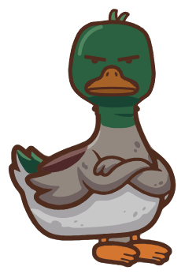
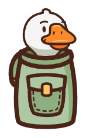
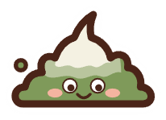
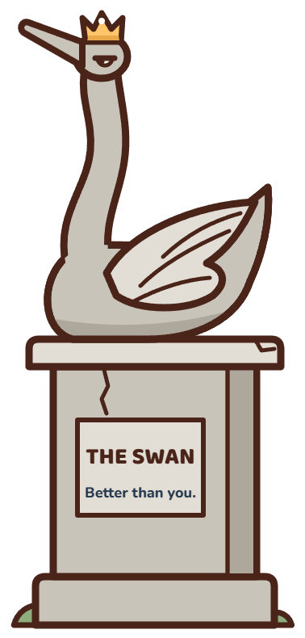

Welcome to the dev diary. Every so often we'll write down what's hatched since last time: what we built, what we threw out, and what made us laugh. You signed up for honks. This is the first one.
A quick catch-up first. Poopy Goose is a side-scrolling platformer set in a little world made of paper. It's properly tricky (never mean), and you can play it alone or with a friend on the couch. The goose has missed the flock's flight south, after a long story involving a slice of bread. His flight feathers picked that same week to fall out. So he's walking.
Meet Bill

Bill is a mallard. He has seen everything, and he wasn't impressed by any of it. He's the straight man to the goose's chaos, he's the second player in co-op, and he's coming along to get the goose to his flock. He'd rather not say why.
His signature move is The Stare. He looks at something until it stops moving. Moving planks. Falling plops. It works on most things, which says a lot about Bill.
The name is a duck pun. Nobody in the game ever mentions it.
The backpack

Playing alone, you can swap between the two birds whenever you like. Whoever isn't walking rides in a backpack on the other one's back, head poking out, blinking at the scenery. Swap, and they hop over.
Need one of them to hold a spot? Tell them to Stay, and they'll wait where they land until you come back for them. The goose, riding, ducks under anything low and looks delighted about all of it. In co-op, Bill wears the backpack and keeps it shut.
The Drop, second pass

The game is called Poopy Goose. We noticed the goose wasn't doing much of that. So The Drop got a rethink: what comes out depends on what went in.
Eat a breadcrumb, and there's a plop waiting. Drop it in mid-air and it gives the goose a little hop upward, so a goose full of bread can climb higher than one running on empty. Drop it on a pressure plate and it holds a gate open for a few seconds. Run.
Plops land where they fall. On brambles, one makes a step to stand on, briefly. On a sleeping heron, it wakes him up. He's offended.
The toot got a button of its own, too. In the air it pushes the goose forward, and it's strong enough to spin a paper pinwheel. We consider this realistic.
Art criticism

The Pond has a statue of a swan in a crown. Its plaque reads THE SWAN, and under that, Better than you.
You can improve it.
Your work shows up afterwards on the level's results card, as a little sticker, so you can be proud of it. You should be.
Level 2: Crumbs
Level 1 got a tidy-up: Bill's in it now, there's a sign that teaches the swap and Stay, and there's room for the toot and the statue.
And there's a second level. It's called Crumbs. The morning after level 1, the two of them follow a trail of breadcrumbs down out of the woods to the end of the pond where people feed the ducks. Nobody's there. They left plenty behind. It's the level that teaches you to eat, and then to drop. (It's also what you say when something's gone a bit wrong. Both apply.)
It plays well. We checked. Repeatedly.
It sounds like something now
The game has sound. The goose has three honks to pick from. The heron snores, startles and yawns. Checkpoint flags chime, the title screen has its own theme, and the footsteps were cut from a recording of a foot tapping. It works better than it sounds.
Honk ✦ Waddle ✦ Plop ✦ Repeat